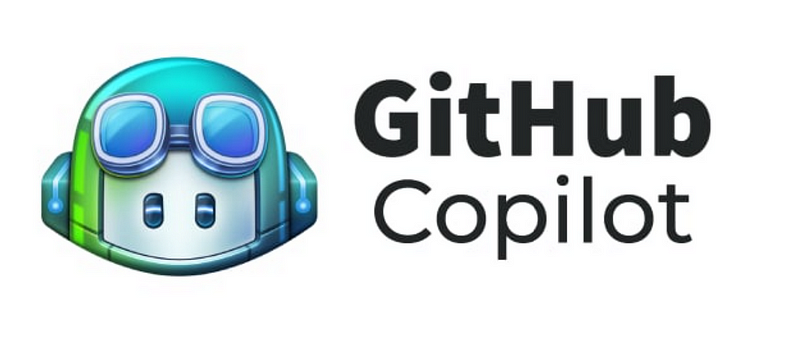
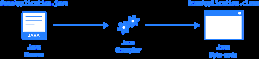
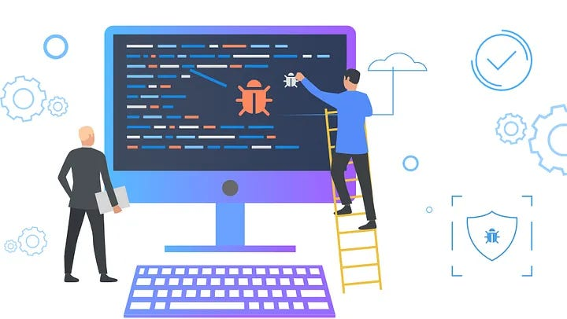
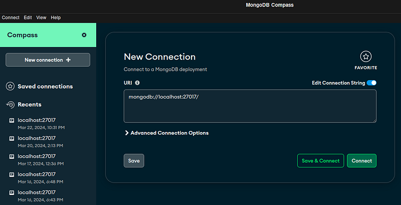
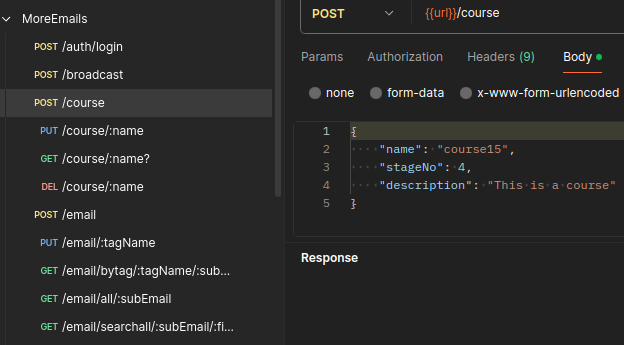

When I say I want a fully functional language server before I start coding, people look at me like I am crazy. I believe in setting up your toolchain to the fullest before even starting on development. Shocking, awe, what a view, I know. Other developers just don't get it.
But it really is important. You need to have all your tools before you build a project. And, you need to learn to use them. All of them. And, you must have them to use them. I will show you the absolute standard for all developer needed tools. We call this, the toolchain.
What is a toolchain?
A toolchain comprises of an editor, compiler, language server, Git viewer, database viewer and endpoint viewer (optional). These comprise your tools for all of development.
There are more parts to a toolchain, I know, but we are covering the main parts, bear with me here.
A toolchain is all the things surrounding that block of text you are creating. The program, the code, all these tools are for you, it is your set of tools.
So whenever you open up a C++ editor and it says toolchain, this blog post explains what it is talking about.
And you know what, you want the best tools you can get. You do not have to go out and buy a tool. Don't do that. Let's qualify, you want the best tools that are free.
Ah, that's better, a breath of fresh air. What does free mean? Free means you get it from the internet at no cost to you. Usually these free toolchains come in bundles. These are Integrated Code Environments, IDEs.
What makes an IDE an IDE are the toolchain that come with it. They are a bundle of the editor, compiler, language server, git viewer, database viewer and endpoint viewer (this one is usually separate) all in one.
What is crazy, these tools I mentioned, editor, compiler, language server, etc. are actually separate entities. Of course beginners are going to have a tough time learning IDE. We are basically learning 6-7 tools all at once.
That is no easy task! You are learning multiple things, being introduced to them and you are expected to learn how they all come together.
My goal here is to tell you all about these tools individually and how when seen separately, as they were intended, make every IDE the same thing repackaged with a different color scheme.
This is why you will always here advanced developers tell you, "just use any IDE, they are all the same". It is because the individual set of tools serve their same purposes.
There is nothing different in the toolchain. What is different is the quality, GUI button placement and color scheme. There is nothing different between the IDEs. Really, there isn't. They are all just bundles of tools as a chain.
We can even Frankenstein ourselves a chain of tools individually with Vim or VS Code extensions. We can pick and choose software from the internet as our tools.
Mastering the different toolchain tools is how you become IDE agnostic.
Which IDEs to use when?
I believe there are 3 top contenders for free toolchain bundles. They are Vim, IntelliJ, VS Code and if you can get them JetBrains IDEs. Not to fear, dismiss any feelings of FOMO. IntelliJ community is almost no different than premium.
JetBrains premium IDEs are equal to Vim. If you had to use all three for their best situations they would be...
#1 Fast amazing production -> Vim
Java development -> IntelliJ Community
General lazy development -> VS Code with Vim bindings
Great production if you can get it, otherwise use Vim -> JetBrains IDEs
I had to put that out there, because there are so many fear of missing out feelings. Vim is freakin awesome, CLI Git is freakin awesome. Watch some Primeagen on Vim and you will learn a lot about toolchains.
That is literally what Vim programming is, a piecemeal of your own set of tools.
Let's talk about the individual tools here...
Explaining the tools in a toolchain
I highly recommend reading over this section. As crazy as this sounds, toolchains are actually part of the programming fundamentals. Sad, I know.
It is very difficult to imagine something seemingly so advanced as part of the beginning of your journey.
I will save you a lot of time and hassle by explaining how these work, so please go through them for your own sake.
Also, I didn't include the Linker in these short explanations as I thought it would be excessive.
But let's start with the most fun tool, the language server....
The language server
The language server is a socket based listener of all text typed into an editor.
It takes every change to the code and compiles it for autocomplete, syntax correction, usage finding, goto lines, ctrl+f, etc. all things that require language specific changes. The language server does this all server side then returns a response.
It runs with a response request model just like any web based protocol and exists when you start up any IDE.
In reality, you can start up a singular language server just like it were a Minecraft server, any game server or website.
It would be a Java server, or a Python server. Every IDE has this. Every IDE runs a Java server, Python server, a language server for their code changes.
On code change it sends a json request to the language server and asks for a response.
The response can be an autocomplete, syntax correction and all kinds of things.
Not all language servers are high quality.
There are open source language servers and proprietary ones, like with JetBrains. There are many many language servers for all languages.
When we build our own IDE, like with Vim or VS Code we can choose our language server with extensions. We feel the direct consequences of a good or bad language server immediately.
And, it is freakin awesome!
The editor
This is essentially notepad. If you recall the simplicity of just typing characters on a white background, the editor is exactly that.

The difference between an editor and notepad, code editors have an API in the background where multiple programs can plug in. The editor API controls its views, such as autocomplete, syntax highlighting, line count, git properties.
This API can be used with any other program, concurrently. Language servers, other extensions and remote servers are all fair game to the code editor API.
It is so cool how the API can hook up to multiple software all at once. This is how it is so extensible, how VS Code, Vim & JetBrains can have all these extensions.
The extensions hook into the API to the editor just like the language server.
Copilot
Copilot uses the API of the editor to edit the view we see on screen. It takes the some code from the file, sends it to a remote server, and asks for an autocomplete.
Any extension can do this, and as a developer, you can use the editor API to make your own tools for your own viewing on your own screen.
Copilot is one of many extensions which take advantage of the editor API.
The compiler
What we are doing here, is converting source code to another more understandable language for the machine.
This can be byte code, machine code or any other intermediary.
This translation is the only function of a compiler. It tries to convert it, shows errors in the conversion, rinse and repeat.
It is surprising how separate compilers and debuggers are from everything else. When IDEs include them, they really are distinct. You can pick and choose them, you can download a compiler from the internet and use it individually.
They come open source, proprietary and with all kinds of error handling.
The debugger
Debuggers are meant to help you find and remove bugs in code with pausing, code stack inspection, variable watching and many different features.
Debuggers are not compiling the code. They are a set of tools for finding bugs. For bigger programs debuggers are massively helpful.
Some problems are near impossible to solve without a debugger. You can piece meal any debugger to compiler and all the tools listed here.
It is just one more thing added to your tool chain.
The git viewer
How you view your Git properties can be from command line or GUI, it does not matter. But, to operate as a team you need a Git viewer. IDEs generally come with this, including Vim.
This is just one more thing in a tool chain. And, it is separate as well.
The database viewer
Typically, database viewers are a separate software. Though with extensions I believe VS Code, JetBrains and Vim all can show your database objects from within the same window.
You absolutely need a database viewer. It is a complete UNIT. If you are using MongoDB it is Mongo Compass, if you are using MySQL it is MySQL WorkBench.
What is crazy, extensions exist for pretty much every database out there to include in the same window. Yea, pretty freakin cool.
But yea, how else are you going to see what is in your database? How will you test your code against a database?
You need a database viewer for this...
The endpoint Viewer
I call this optional because it is mostly for web development. But if you are making a multiplayer game or a server of some kind then you need to know what you are doing at every URL.
Endpoint viewers typically are separate software and that's okay, breath. Why in the world haven't editors included freaking end point viewing into their IDE.
Okay Jesse, breath. I am triggered. Like damn, its an essential tool but I haven't seen endpoint viewers.
Instead what we have are software like Postman. There are many endpoint viewers out there. But, the most popular is Postman.
It is an optimized way to view how you are manipulating endpoints in code.
You can create an entire backend of endpoints without ever touching the front end and that is cool. We pretend we are the frontend with Postman.
Then our front end developers has to deal with the endpoints I create, mwuahahaha, the POWER. *fire elmo meme
But yea, we quickly spin up a bunch of endpoints this way. Absolutely essential for the backend engineer.
Summary
And that is a solid introduction to tool chains. To sum up, toolchain are a set of tools which are reach replaceable with other software in the chain. We can piece meal tools in our chain however we want.
The entire set of tools basically serve the same functions, they are the code editor, the compiler, the debugger, the language server, the git viewer, the database viewer and the endpoint viewer (optional).
These are fundamental to programming and used in all development.
Anywho, I hope you learned something...
CTA: Check out my book on learning code
Happy coding!
Resources
Why the fundamentals are important: Why Coding Fundamentals Are Important & Questions You Should Be Asking